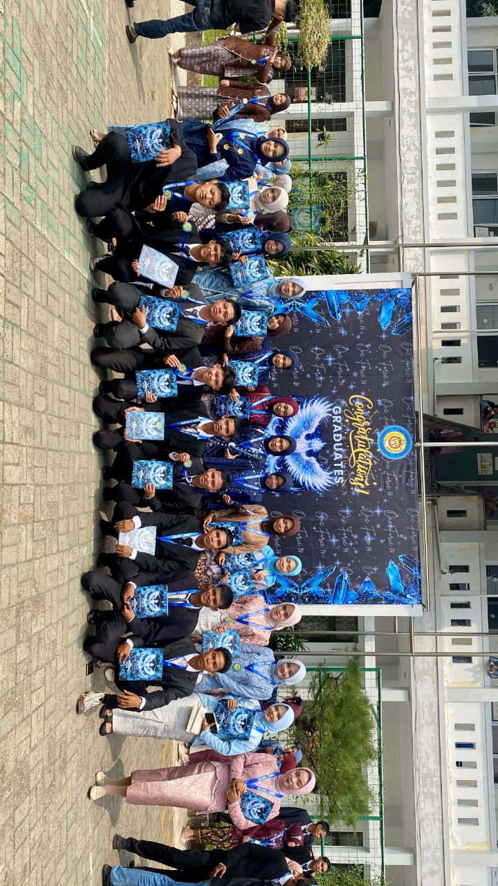

KENANGAN KELAS TKJ 1 ANGKATAN 2026
Dari pertemuan pertama hingga hari perpisahan, kami telah berbagi tawa, cerita, perjuangan, dan mimpi yang sama. Website ini menjadi tempat untuk mengabadikan setiap kenangan, persahabatan, dan momen berharga yang akan selalu menjadi bagian dari perjalanan TKJ 1 Angkatan 2026.
Lihat kenangan kamiLebih dari sekadar kelas biasa
Selama tiga tahun bersama, TKJ 1 bukan hanya tempat untuk belajar jaringan dan teknologi. Di sinilah kami tumbuh, berbagi cerita, menghadapi tantangan, dan menciptakan kenangan yang akan selalu kami ingat.
Dari tugas yang menumpuk, praktik yang melelahkan, hingga momen tawa yang tak terlupakan, semua menjadi bagian dari perjalanan kami sebagai keluarga besar TKJ 1 Angkatan 2026.
Sosok di balik perjalanan kami0
Total Siswa/i
0
Jam Praktik Lab
0
Meter Kabel LAN
0
Troubleshoot Sukses
Sosok di balik perjalanan kami
Di balik setiap kenangan dan pencapaian yang kami raih, ada seorang guru yang selalu hadir untuk membimbing, mendukung, dan mengarahkan kami menjadi pribadi yang lebih baik.
Momen yang tidak akan terlupakan
Waktu boleh berlalu, tetapi setiap momen yang pernah kami lalui bersama akan tetap hidup dalam kenangan. Di sinilah kami menyimpan cerita, persahabatan, dan kebahagiaan yang menjadi bagian dari perjalanan TKJ 1 Angkatan 2026
Mungkin Kelasnya Berakhir, Tapi Ceritanya Akan Selalu Hidup.
Tidak terasa, tiga tahun yang penuh cerita akhirnya sampai pada penghujungnya. Dari yang awalnya saling tidak mengenal, kini kami membawa begitu banyak kenangan yang akan selalu tersimpan dalam hati.
Kami mungkin akan melangkah ke jalan yang berbeda dan mengejar impian masing-masing. Namun, persahabatan, tawa, perjuangan, dan setiap momen yang pernah kami lalui bersama akan selalu menjadi bagian dari cerita hidup kami.
Terima kasih kepada para guru, wali kelas, dan seluruh teman-teman TKJ 1 Angkatan 2026 yang telah menjadi bagian dari perjalanan yang luar biasa ini.
"Berpisah untuk Melangkah, Bukan untuk Melupakan."
